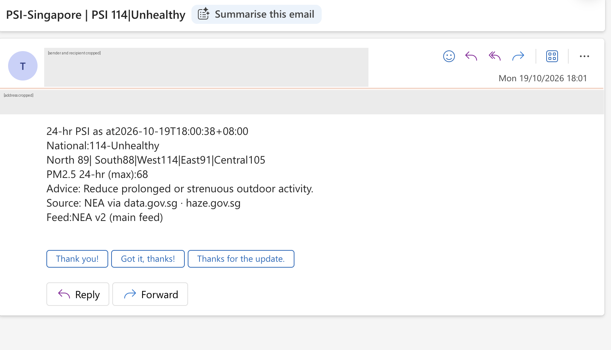
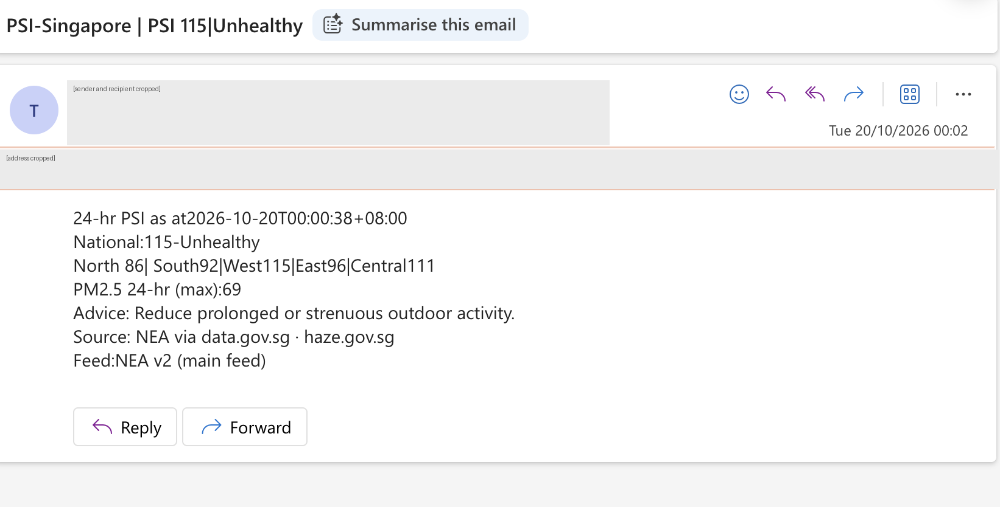
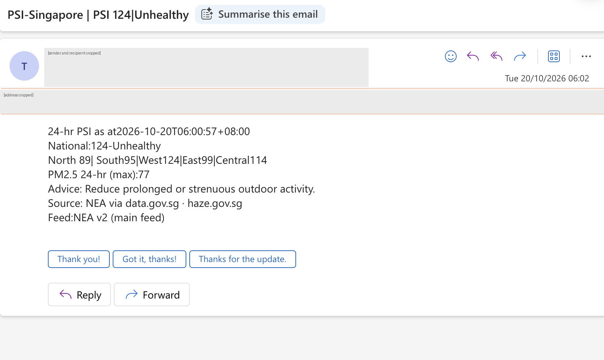
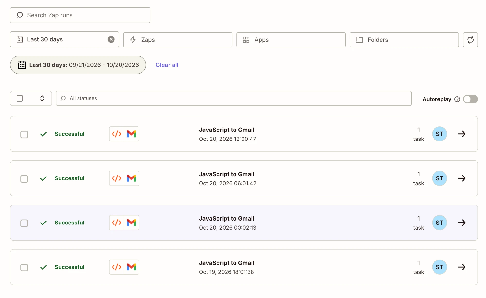
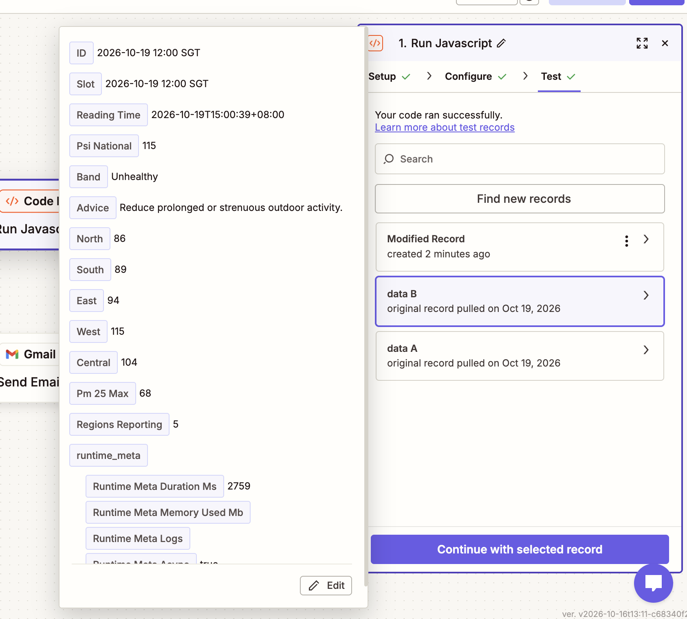
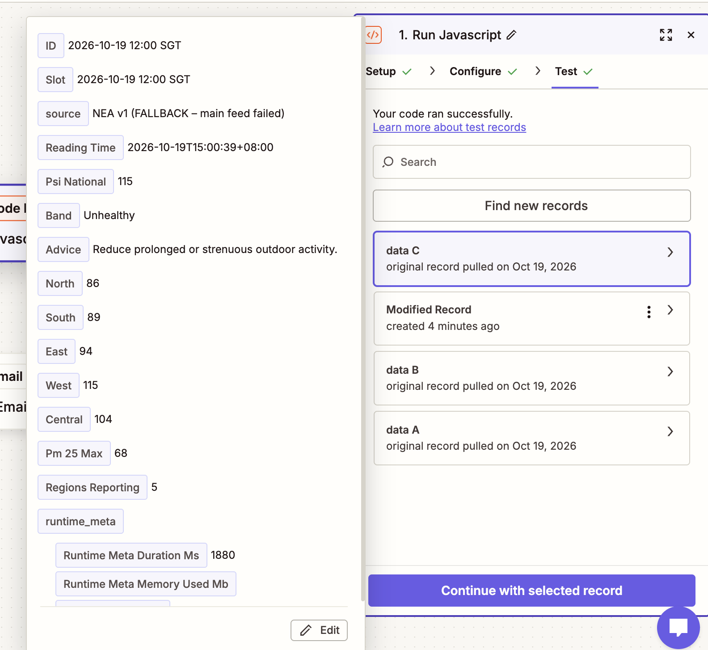

Problem Set 5 · Sanesh Tiwari
6-hourly Singapore PSI email agent
A Zapier agent that fetches NEA's 24-hour PSI readings (the data behind haze.gov.sg) and emails me a summary four times a day.
Agent card
- 1. The job
- Fetches NEA's latest 24-hour PSI for Singapore (national figure, five regions, PM2.5, health band and NEA advice) and emails it every 6 hours, for me in the role of a student commuting and exercising outdoors who needs to decide whether to limit outdoor activity.
- 2. The trigger
- Code by Zapier (Run JavaScript) polls NEA's PSI feed on data.gov.sg and starts a run once per new 6-hour slot: 00:00, 06:00, 12:00 and 18:00 SGT.
- 3. The tools
- Code by Zapier: Run JavaScript (read-only GET request to data.gov.sg; computes the highest regional PSI and NEA band). Gmail: Send Email (one plain-text email). No other apps or actions.
- 4. It must never
- Email anyone other than me. The Gmail step's To field is typed in as my own address, not mapped from data, and the Zap has no other send or share actions.
- 5. Where a person checks
- I read each email when it arrives (about 00:00, 06:00, 12:00 and 18:00) and spot-check it against haze.gov.sg. Once a day I review Zap History for errored or halted runs.
My agent card | Sanesh Tiwari | finished 19 October 2026, 15:00 SGT
Our two-by-two map
Tap a quadrant to try it. My agent is pinned in AI alone, with checks.
A person leads, AI inside
The person leads and AI works inside.
Agents run it, a person judges
Agents run the process and a person judges inside it.
AI alone, with checks
AI does it, with spot checks.
A person decides, AI alongside
A person decides with AI alongside.
You picked AI alone, with checks (bottom left) — where my PSI agent sits.
What each quadrant means for the person in the loop
| Quadrant | Right answer? | Together or alone? | The person in the loop |
|---|---|---|---|
| A person leads, AI inside top left | A right answer | Must do it together | Person leads; signs off what AI checked. |
| Agents run it, a person judges top right | No single right answer | Must do it together | Agents run it; person judges at judgement points. |
| AI alone, with checks ← my agent bottom left | A right answer | Either can do it alone | AI does it; a person reads its report or audits its log. |
| A person decides, AI alongside bottom right | No single right answer | Either can do it alone | Person decides; AI drafts options and checks facts. |
Q1 · Where my agent sits and what it means
(a) Quadrant. AI alone, with checks (bottom left).
(b) The two questions. Work with a right answer: the PSI is a measured number published by NEA. In my runs the email's figures either matched haze.gov.sg and Zap History exactly or they didn't — e.g. run 1 showed national PSI [value], identical to NEA's [time] reading. The health band is a fixed lookup (0–50 Good, 51–100 Moderate, …), so there is no judgement involved. Work that either can do alone: I could check haze.gov.sg myself; the agent just does it on a timer. None of my runs needed my input to complete — every run in Zap History ran start-to-finish without me.
(c) The person in the loop. I stay at the gate as an auditor, not an approver: I spot-check emails against haze.gov.sg and review Zap History for errors or halts. The agent may fetch, compute the max region, label the band and email me — alone. It may not decide anything for me. It would move to A person decides, AI alongside if it started recommending actions (e.g. "cancel your outdoor event") where there's no single right answer, and to A person leads, AI inside if it emailed other people (e.g. a school sending haze notices) — then a person must sign off before it goes out.
(d) My group’s view. On our group’s map we placed 28 tasks, and the closest to my agent is Stocks · Pull daily closing prices in AI alone, with checks. I agree: like PSI, a closing price is a published number with one correct value, so my placement is consistent with the group’s. I agree with most of the board, but I would answer the first question differently for Product · Write release notes, which we put in A person leads, AI inside (work with a right answer). The facts in release notes (what changed, which version) are checkable, but the wording, emphasis and what to leave out are judgement calls with no single right answer, so I would move it to A person decides, AI alongside. My runs showed the contrast: every email could be checked number-for-number against NEA, while two people would rarely write the same release notes.
Runs, tricky case and fix
Email addresses are cropped from all screenshots.






source now reads “NEA v1 (FALLBACK – main feed failed)”.
Tricky case: the main NEA feed goes down
| Item | Detail |
|---|---|
| Case meant to break it | NEA's main PSI feed (data.gov.sg v2) is unavailable. Simulated in a duplicate Zap by changing the URL to …/real-time/api/psi-broken, so the live Zap is untouched. |
| Expected beforehand written 19 Oct 2026, 15:30 SGT, before running | The email will still work with no issues. data.gov.sg is a reliable, transparent government source, and my code falls back to NEA's older v1 feed when v2 fails, so the run should succeed and every number (national PSI, five regions, PM2.5, band) should match haze.gov.sg, with no blanks, n/a or NaN. |
| What would prove me wrong | The run errors in Zap History, or the email arrives with blank, n/a or wrong values. |
| What actually happened | The broken v2 URL returned 404 Not Found. The code caught the error and fell back to NEA’s v1 feed, and the run succeeded with complete data: PSI 115 (Unhealthy), North 86, South 89, East 94, West 115, Central 104, PM2.5 68, 5/5 regions, reading time 15:00 SGT. But the fallback was silent: nothing in the output showed the main feed had failed. |
| Expectation met? | Yes for the numbers: no blanks, n/a or NaN. But the test showed something I had not expected: as the person checking, I could not tell the agent was running on a backup source. |
| Fix and rerun | Fix: added a source field set to “NEA v2 (main feed)” or “NEA v1 (FALLBACK – main feed failed)”, and shown in the email. Rerun: with the URL still broken, source read “NEA v1 (FALLBACK – main feed failed)” and the numbers were unchanged. The same fix, with the working URL, was then applied to the live Zap. |
Collaboration log
| Item | Detail |
|---|---|
| Delegated to AI | Claude drafted the Zapier trigger code, the email template and this page's layout. |
| What I checked and how | Ran the trigger test and compared every field with the raw data.gov.sg JSON and haze.gov.sg; checked PSI band cut-offs against NEA's published bands; opened the page in a private window. |
| One AI error I caught | [e.g. the AI first assumed Zapier's free plan allowed Webhooks GET (it's premium) / mislabelled the band boundary / used the wrong JSON path] |
| Time | [~x hours] |
| Cost | S$0 — Zapier free plan, Vercel Hobby, no card added. ~4 tasks/day ≈ 120/month, within the free limit. |
Reflection
The agent fitted the job well because PSI is an objective number with fixed health bands, so a timer plus a lookup does it reliably with only spot checks from me. It failed [where: e.g. the 15-minute polling meant emails arrived up to 15 min after the slot, and one run errored when the API was slow]. I would change it to only email when the band changes or PSI crosses 100, so the alerts carry signal instead of four routine emails a day.